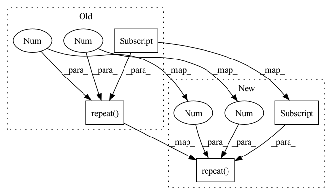

Pattern ID :2911
Before Change
self.transformer = transformer
def forward(self, x):
attn_mask = causal_attn_mask(x.shape[1]).unsqueeze(0).repeat(x.shape[0] , 1 , 1 )
predictions, _, _ = self.transformer(x, attn_mask)
return predictions
def get_loss(self, x):After Change
self.device = device
def forward(self, x):
attn_mask = causal_attn_mask(x.shape[1]).unsqueeze(0).repeat(x.shape[0] , 1 , 1 ) .to(self.device)
predictions, attns, _ = self.transformer(x, attn_mask)
return predictions, attns
In pattern: SUPERPATTERN
Frequency: 3
Non-data size: 4
Instances Fragment ID: 16004309
Project Name: sea-snell/grokking
Commit Name: 9652db76d1cbdbe66e24e709168b12fa25ba00fc
Time: 2021-11-18
Author: sea_snell@icloud.com
File Name: grokk_replica/grokk_model.py
M Class Name: GrokkModel
N Class Name: GrokkModel
M Method Name: forward(2)
N Method Name: forward(2)
M Parent Class: nn.Module
N Parent Class: nn.Module
M File Name: grokk_replica/grokk_model.py
N File Name: grokk_replica/grokk_model.py
M Start Line: 12
M End Line: 14
N Start Line: 14
N End Line: 16
Before Change
alibi = build_alibi_tensor(hidden_states.shape[1], n_head=self.num_heads, dtype=hidden_states.dtype)
// hidden_states: [batch_size, seq_length, hidden_size]
// repeat alibi tensor with the batch size
alibi = alibi.repeat(hidden_states.shape[0] , 1 , 1 ) .to(hidden_states.device) // TODO eliminate cpu-gpu transfer!
// apply preprocessing if the input is padded
if attention_mask is not None and 0 in attention_mask: // TODO REMOVE CUDA SYNCAfter Change
alibi = pre_process_alibi_for_pad(alibi, attention_mask)
// otherwise repeat alibi tensor with the batch size
else:
alibi = alibi.repeat(hidden_states.shape[0] , 1 , 1 )
mixed_x_layer = self.query_key_value(hidden_states)
// [batch_size, seq_length, 3 x hidden_size] --> [batch_size, seq_length, num_heads, 3 x head_dim] Fragment ID: 16004311
Project Name: bigscience-workshop/distributed-bloom
Commit Name: 5d8f7be5466b7a40fb777bde973ca773b378e83a
Time: 2022-06-20
Author: justheuristic@gmail.com
File Name: src/bloom/block.py
M Class Name: BloomAttention
N Class Name: BloomAttention
M Method Name: forward(9)
N Method Name: forward(9)
M Parent Class: nn.Module
N Parent Class: nn.Module
M File Name: src/bloom/block.py
N File Name: src/bloom/block.py
M Start Line: 78
M End Line: 125
N Start Line: 78
N End Line: 123
Before Change
emb[:, :, : self.channels] = emb_x
emb[:, :, self.channels : 2 * self.channels] = emb_y
return emb[None, :, :, :orig_ch].repeat(tensor.shape[0] , 1, 1 , 1 )
class PositionalEncodingPermute2D(nn.Module):
def __init__(self, channels):After Change
emb[:, :, : self.channels] = emb_x
emb[:, :, self.channels : 2 * self.channels] = emb_y
self.cached_penc = emb[None, :, :, :orig_ch].repeat(tensor.shape[0] , 1, 1 , 1 )
return self.cached_penc
class PositionalEncodingPermute2D(nn.Module): Fragment ID: 16004306
Project Name: tatp22/multidim-positional-encoding
Commit Name: 6d0ad50ae049a71cfa97f9c731ce2653b0b928b6
Time: 2022-03-07
Author: peter.tatkowski@1plusx.com
File Name: positional_encodings/positional_encodings.py
M Class Name: PositionalEncoding2D
N Class Name: PositionalEncoding2D
M Method Name: forward(2)
N Method Name: forward(2)
M Parent Class: nn.Module
N Parent Class: nn.Module
M File Name: positional_encodings/positional_encodings.py
N File Name: positional_encodings/positional_encodings.py
M Start Line: 85
M End Line: 85
N Start Line: 81
N End Line: 99